GALERIA DE FOTOS
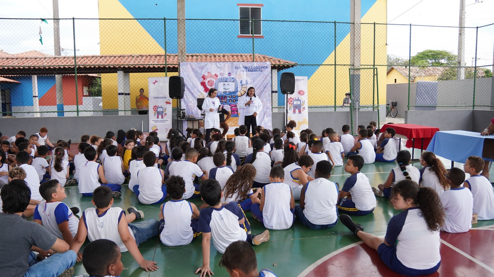
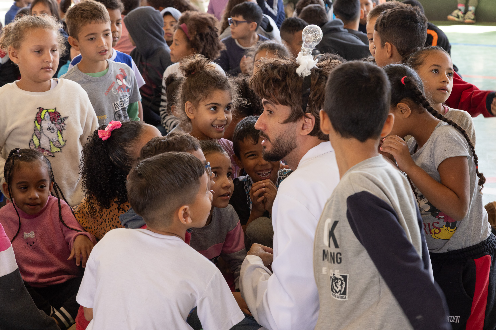
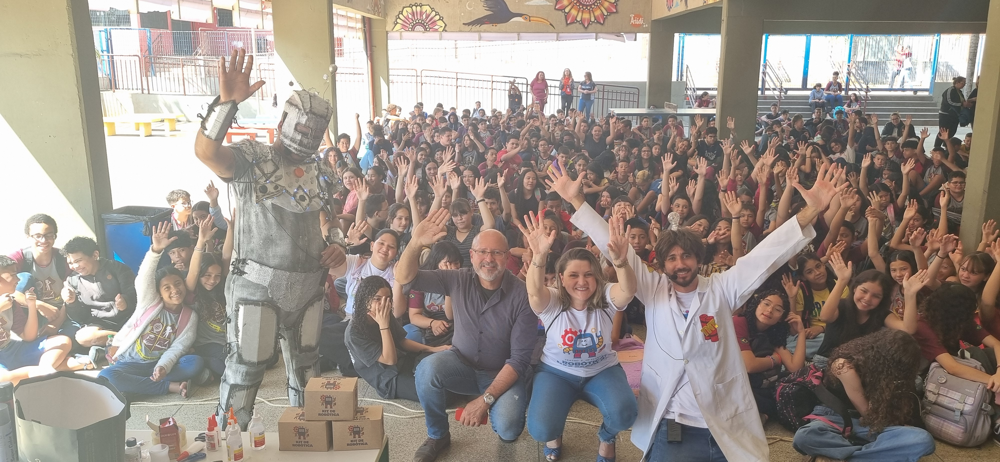
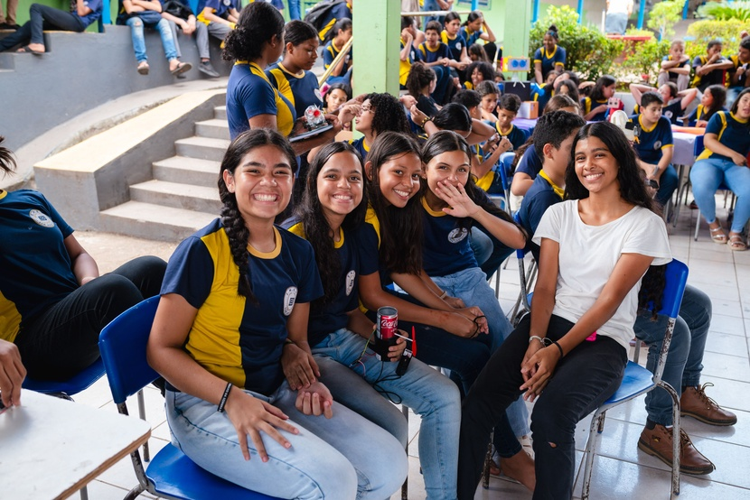

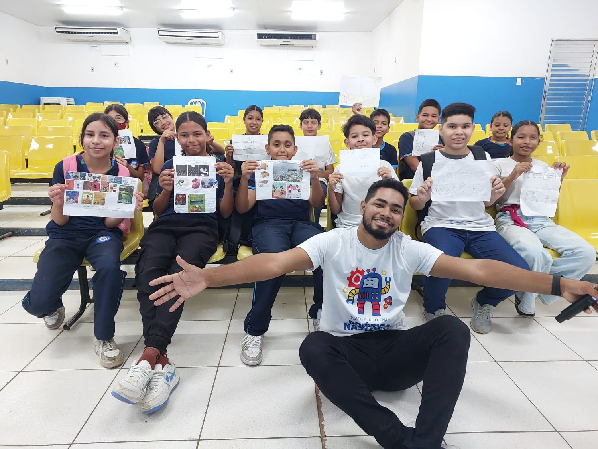
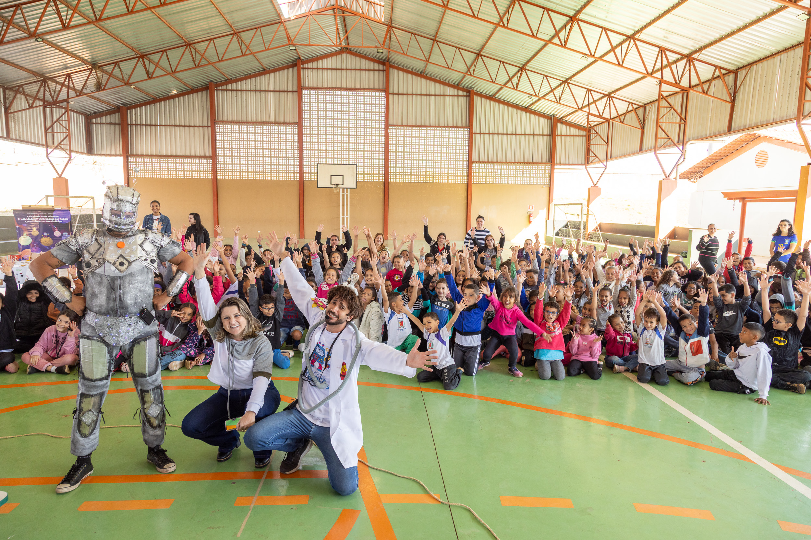
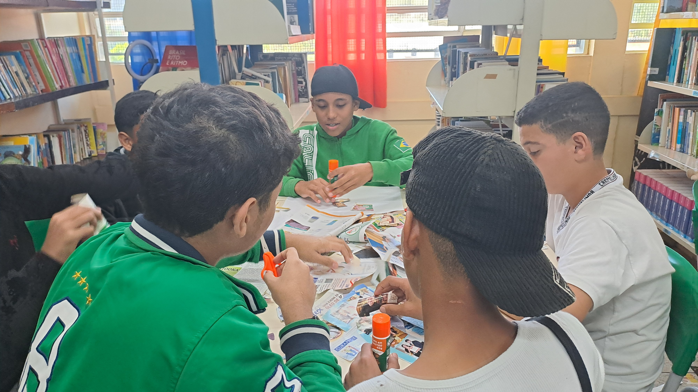

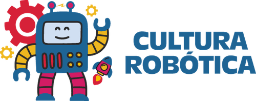
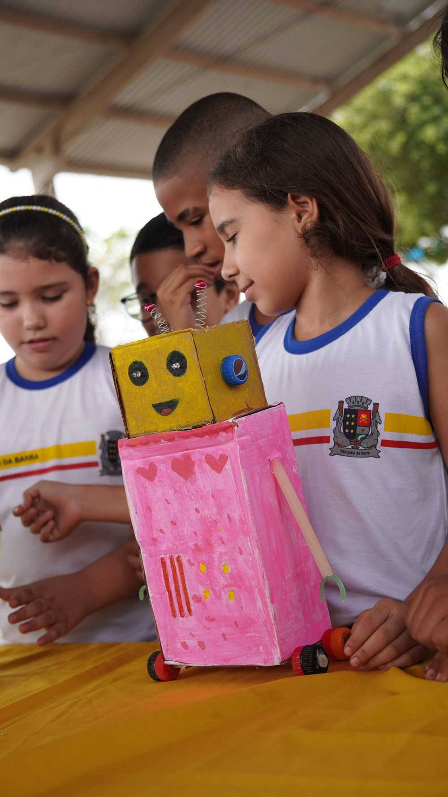
"Arte e inovação para mentes criativas"
Teatro e artes plásticas para inspirar jovens e crianças em escolas públicas
O projeto Cultura Robótica une teatro e artes plásticas para inspirar jovens e crianças em escolas públicas.
Através de performances teatrais que exploram temas de inovação e ética, e de oficinas práticas de arte, o projeto desperta a criatividade e o senso crítico, incentivando o diálogo entre tecnologia e responsabilidade para o futuro.
SP
RJ
As oficinas de artes proporcionam aos alunos da escola pública uma experiência artística enriquecedora por meio da técnica de colagem, incentivando a observação do mundo ao redor e a reflexão sobre a relação entre valores morais e inovação.
Além disso, a oficina busca estimular o pensamento crítico e a capacidade de inovação, promovendo a integração entre o universo tecnológico e o mundo artístico.
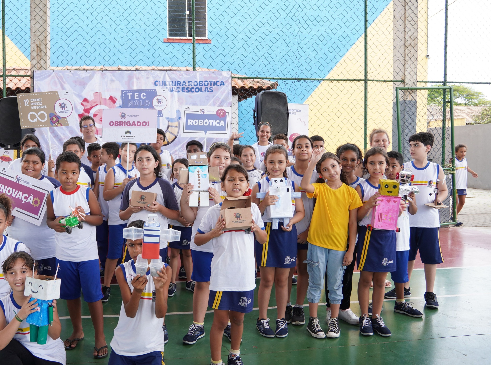
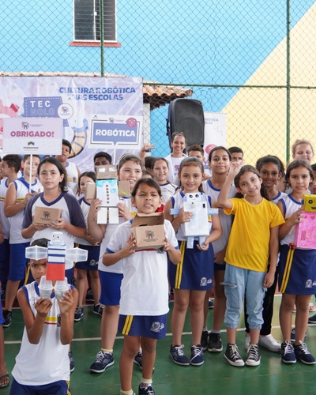
A performance teatral na escola trouxe à cena as temáticas de inovação e tecnologia, inspirando os jovens a imaginar o futuro.
Como forma de democratizar o acesso à cultura no Brasil, o projeto Cultura Robótica conta com a disponibilização online da palestra — onde o público poderá conhecer melhor nossas experiências.






